Historias de Mujeres que Inspiran
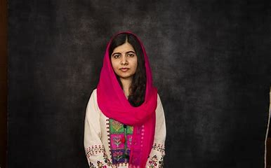
Malala Yousafzai
Malala es un símbolo mundial de la lucha por la educación de las niñas. Después de ser atacada por el Talibán por su activismo, se convirtió en la persona más joven en recibir el Premio Nobel de la Paz.
Lección: Nunca rendirse ante las adversidades.
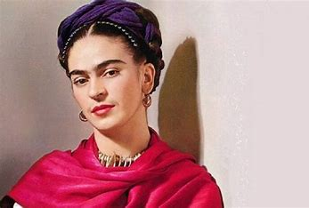
Frida Kahlo
La pintora mexicana Frida Kahlo creó su propio estilo único mientras luchaba contra dolor físico y personal. Sus obras siguen siendo un referente del arte y la resiliencia femenina.
Lección: Convertir el sufrimiento en arte.
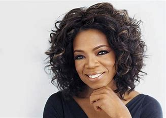
Oprah Winfrey
Superó una infancia llena de dificultades y abusos para convertirse en una de las mujeres más poderosas y admiradas del mundo.
Lección: La adversidad no define tu futuro.
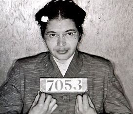
Rosa Parks
Su acto de desobediencia en un autobús desencadenó el movimiento por los derechos civiles en Estados Unidos.
Lección: Un solo acto de valentía puede cambiar el curso de la historia.
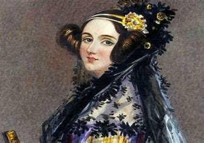
Ada Lovelace
Considerada la primera programadora de computadoras, sus ideas fueron clave para el desarrollo de la informática moderna.
Lección: Romper barreras y dejar un legado duradero.
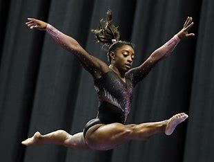
Simone Biles
Simone Biles, una de las gimnastas más destacadas de la historia, ha ganado múltiples medallas olímpicas y mundiales. Ha superado desafíos tanto físicos como emocionales, convirtiéndose en un símbolo de resiliencia y fortaleza mental.
Lección: La verdadera fortaleza no solo está en el cuerpo, sino también en la mente, y superar desafíos emocionales puede ser tan importante como los físicos.
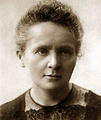
Marie Curie
Marie Curie fue una pionera en el campo de la radioactividad, la primera mujer en ganar un Premio Nobel y la única persona en recibirlo en dos campos diferentes: Física y Química. A pesar de las dificultades sociales de su época, su dedicación a la ciencia dejó un legado duradero.
Lección: La perseverancia y la pasión por el conocimiento pueden superar las barreras sociales y personales.
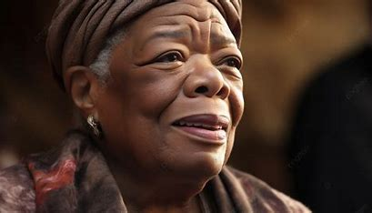
Maya Angelou
Maya Angelou fue una escritora, poeta y activista que, a través de sus obras, se convirtió en una voz poderosa para los derechos civiles y la igualdad. Su libro *"I Know Why the Caged Bird Sings"* es un referente de la literatura estadounidense.
Lección: Las experiencias difíciles no definen nuestra vida; el poder está en cómo elegimos usar nuestra voz para transformar el mundo.

 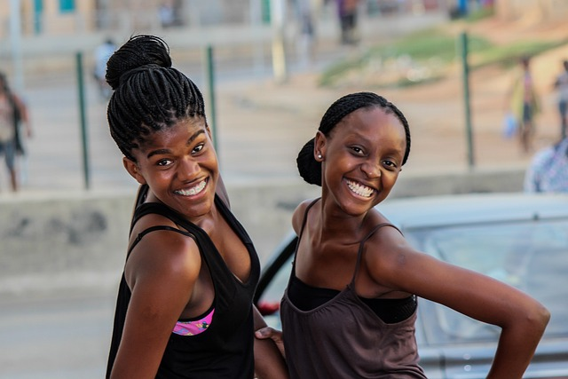
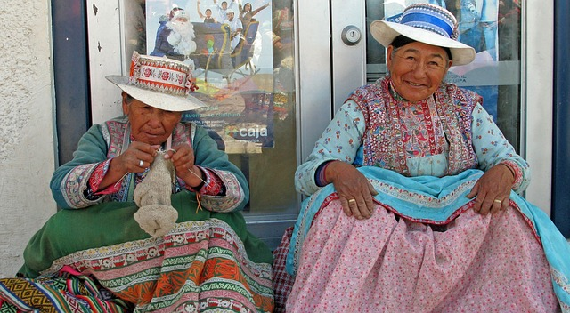
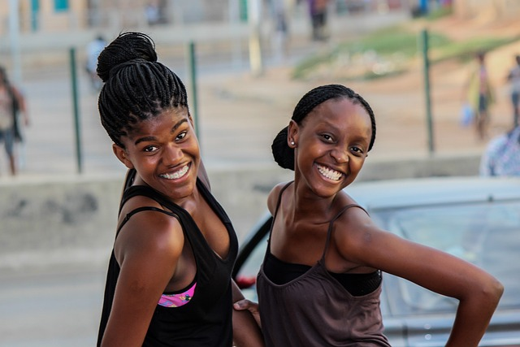
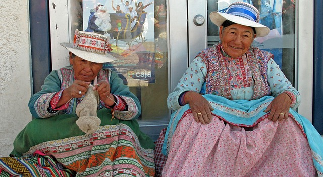